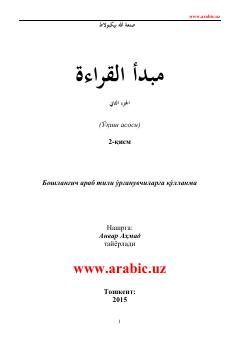

MQBoshlang'ich aраб тили ўргануvchilar uchun mo'ljallangan mashhur o'quv qo'llanmaning ikkinchi qismi.
Ushbu kitob boshlang'ich aраб тили ўрганувчилар учун мўлжалланган «Мабдаул қироа» (ўқиш асоси) дарслигининг иккинчи қисмидир. Манба араб тили грамматикаси, луғатлар ва матнларни ўзбек тилида тушунарли тарзда ўрганиш учун қулай қўлланма сифатида тайёрланган. Китоб маърифатпарвар олим Сан'атуллоҳ Не'матуллоҳ ўғли Бекпўлат томонидан ёзилган бўлиб, узоқ йиллардан бери таълим муассасаларида муваффақиятли ўқитиб келинади.